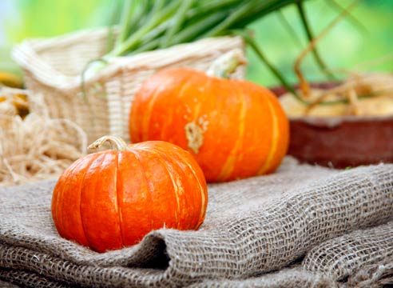
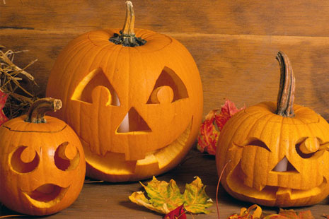
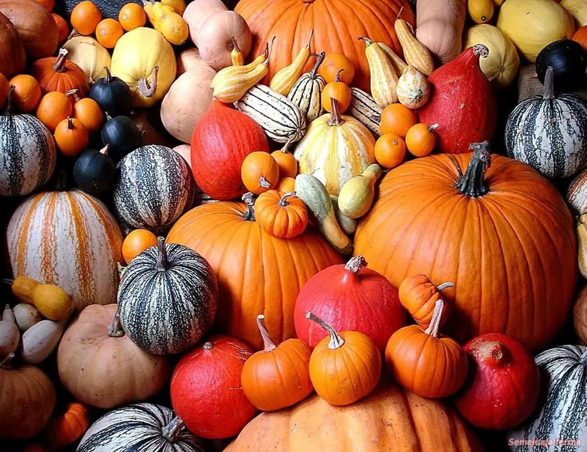
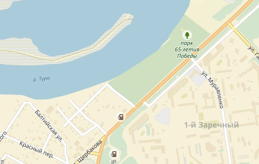

Фестиваль тыквы
Каша из тыквы, конкурс красоты среди тыквенных лиц, семена тыкв и многое другое
Тыква (лат. Cucurbita) — род травянистых растений семейства Тыквенные (Cucurbitaceae). Под словом «тыква» в России обычно понимается вид Тыква обыкновенная (Cucurbita pepo), широко распространённый и культивируемый как пищевое и кормовое растение. Русское слово «тыква», по версии Иллич-Свитыча, происходит от праславянского *tyky из *tykati - "жиреть".
Куда идти
Когда идти
1 августа - 30 сентября
С 10.00 до 20.00